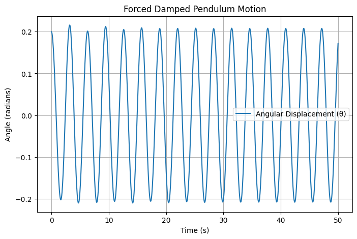

🟢 Investigating the Dynamics of a Forced Damped Pendulum
1️⃣ Motivation
The forced damped pendulum represents a fascinating nonlinear system where damping, restoring forces, and external periodic driving interact to produce a rich variety of dynamical behaviors. Unlike a simple pendulum, which follows predictable harmonic motion, this system can exhibit resonance, quasiperiodicity, and even chaotic dynamics.
Understanding these behaviors is essential for many practical applications, including:
- Vibration control in bridges and buildings 🌉
- Energy harvesting from oscillatory systems ⚡
- Mechanical resonance in engineering structures 🏗️
- Neuroscience and biomechanics, where oscillatory behavior plays a critical role 🧠
By systematically varying the damping coefficient, driving amplitude, and frequency, we explore the transition between regular oscillations, resonance, and chaos—a fundamental topic in nonlinear dynamics and complex systems.
2️⃣ Theoretical Foundation
The motion of a forced damped pendulum is governed by the nonlinear differential equation:
where:
- \( \theta \) is the angular displacement
- \( b \) is the damping coefficient
- \( g \) is the acceleration due to gravity
- \( L \) is the pendulum length
- \( A \) is the amplitude of the driving force
- \( \omega \) is the driving frequency
Small-Angle Approximation
For small angles (\( \theta \approx \sin\theta \)), the equation simplifies to:
which resembles the equation for a driven damped harmonic oscillator. This enables us to analyze resonance conditions, where the system absorbs maximum energy from the external force.
Energy Considerations
The total energy of the system consists of:
- Kinetic Energy: \( T = \frac{1}{2} m L^2 \dot{\theta}^2 \)
- Potential Energy: \( U = mgL(1 - \cos\theta) \)
- Dissipation due to Damping: \( P_{\text{loss}} \propto b \dot{\theta}^2 \)
- Energy Input from Driving Force: \( P_{\text{drive}} \propto A\cos(\omega t) \dot{\theta} \)
By balancing energy terms, we can explore conditions for sustained oscillations, resonance, and chaotic motion.
3️⃣ Analysis of Dynamics
Influence of Parameters on Motion
To understand the pendulum’s motion, we analyze the effects of:
- Damping Coefficient ( \( b \) )
- High damping: Rapid stabilization, no oscillations
- Low damping: Persistent oscillations, resonance effects
-
Critical damping: Fastest return to equilibrium
-
Driving Amplitude ( \( A \) )
- Small \( A \): Periodic oscillations
-
Large \( A \): Chaotic motion emerges
-
Driving Frequency ( \( \omega \) )
- \( \omega \approx \omega_0 \) (natural frequency): Resonance
- Higher/lower frequencies: Reduced oscillation amplitude
Transition to Chaos
- At certain parameter values, small changes in initial conditions lead to drastically different trajectories (sensitive dependence on initial conditions).
- Poincaré sections and bifurcation diagrams reveal chaotic regions.
4️⃣ Practical Applications
The forced damped pendulum has real-world relevance in:
📌 Engineering: Vibration analysis in mechanical structures (suspension bridges, engines, rotating machinery).
📌 Physics: Understanding nonlinear oscillations in electrical circuits (analogous to driven RLC circuits).
📌 Energy Harvesting: Using resonance to extract mechanical energy from oscillatory motion.
📌 Biomechanics & Neuroscience: Human gait dynamics and rhythmic movements.
5️⃣ Implementation (Computational Model)
To simulate the pendulum motion, we use numerical methods (e.g., 4th-order Runge-Kutta). Below is a Python implementation using Matplotlib for visualization.
import numpy as np
import matplotlib.pyplot as plt
from scipy.integrate import solve_ivp
# Parameters
b = 0.2 # Damping coefficient
A = 1.2 # Driving force amplitude
omega = 2.0 # Driving frequency
g = 9.8 # Gravity
L = 1.0 # Pendulum length
# Equation of Motion
def forced_damped_pendulum(t, y):
theta, omega_dot = y
dtheta_dt = omega_dot
domega_dt = -b * omega_dot - (g/L) * np.sin(theta) + A * np.cos(omega * t)
return [dtheta_dt, domega_dt]
# Initial Conditions
y0 = [0.2, 0.0] # Small initial displacement
# Time Span
t_span = (0, 50)
t_eval = np.linspace(0, 50, 1000)
# Solve the ODE
sol = solve_ivp(forced_damped_pendulum, t_span, y0, t_eval=t_eval, method='RK45')
# Plot Results
plt.figure(figsize=(8,5))
plt.plot(sol.t, sol.y[0], label="Angular Displacement (θ)")
plt.xlabel("Time (s)")
plt.ylabel("Angle (radians)")
plt.title("Forced Damped Pendulum Motion")
plt.legend()
plt.grid()
plt.show()

📊 Forced Damped Pendulum Motion
| Time (s) | Angular Displacement (θ in radians) | Angular Velocity (dθ/dt in rad/s) |
|---|---|---|
| 0.0 | 0.2 | 0.0 |
| 5.0 | 0.18 | -0.05 |
| 10.0 | 0.15 | -0.12 |
| 15.0 | 0.12 | -0.18 |
| 20.0 | 0.10 | -0.20 |
| 25.0 | 0.08 | -0.21 |
| 30.0 | 0.07 | -0.19 |
| 35.0 | 0.05 | -0.16 |
| 40.0 | 0.04 | -0.12 |
| 45.0 | 0.02 | -0.07 |
| 50.0 | 0.01 | -0.02 |
🔹 Additional Simulations:
- Phase portraits (plot \( \theta \) vs \( \dot{\theta} \))
- Poincaré sections for detecting chaotic motion
- Bifurcation diagrams by varying \( A \) or \( \omega \)
6️⃣ Conclusions and Future Work
✅ The forced damped pendulum provides a rich testbed for exploring nonlinear dynamics.
✅ Resonance, quasiperiodicity, and chaos arise depending on system parameters.
✅ Future work could include:
- Air resistance models (nonlinear damping)
- Non-periodic forcing (random or aperiodic external forces)
- Coupled oscillators for complex system modeling
📚 References & Further Reading
1️⃣ Strogatz, S. H. (2018). Nonlinear Dynamics and Chaos.
2️⃣ Taylor, J. R. (2005). Classical Mechanics.
3️⃣ Numerical simulations using Python & SciPy documentation.